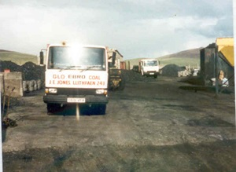

Bryncelyn: Iard Lo
Byddai gan Robert Thomas, Bryncelyn fusnes cario anifeiliaid a garej yma. Ychwanegwyd yr iard lo at y busnes trwy briodas Robert Thomas Jones a Rena, merch masnachwr glo o Fynydd Nefyn. Dyma un o’r ychydig fusnesau yn Llithaen sy’n parhau i gael ei redeg gan yr un teulu. Ehangwyd y busnes i werthu olew, gan y mab, Dylan Jones.
Ffeithiau'r Cyfrifiad:
Iard lo, Bryncelyn